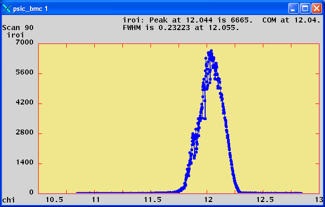

ADPilatus¶
| author: | Mark Rivers (University of Chicago), John Hammonds, Brian Tieman (Argonne National Laboratory) |
|---|
Contents
Introduction¶
This is an areaDetector driver for the Pilatus pixel array detectors from Dectris.
The interface to the detector is via a TCP/IP socket interface to the
camserver server that Dectris provides. The camserver program must
be started before the areaDetector software is started, typically by
running the camonly script provided by Dectris.
The camserver program saves the data to disk as TIFF or CBF files. The areaDetector software reads these disk files in order to read the data, because camserver does not provide another mechanism to access the data. If camserver is saving TIFF files then the driver reads the TIFFImageDescription tag from the TIFF file. This is a long string that camserver writes to the file containing all of the detector settings, including threshold, energy, etc. The driver adds this information to the NDArray using an NDAttribute called TIFFImageDescription. The NDFileTIFF plugin in ADCore R2-6 was changed to write this complete attribute to the TIFFImageDescription tag in the new TIFF file. It will also be written by the NDFileNetCDF, NDFileHDF5, and NDFileNexus plugins. However these plugins are currently limited to 256 character string attributes, so some of the information will be lost because the string is longer than 256 characters.
This driver inherits from ADDriver. It implements nearly all of the parameters in asynNDArrayDriver.h and in ADArrayDriver.h. It also implements a number of parameters that are specific to the Pilatus detectors. The pilatusDetector class documentation describes this class in detail.
Implementation of standard driver parameters¶
The following table describes how the Pilatus driver implements some of the standard driver parameters.
| Parameter Definitions in pilatusDetector.cpp and EPICS Record Definitions in pilatus.template | ||
|---|---|---|
| Parameter index variable | EPICS record name | Description |
| ADTriggerMode | $(P)$(R)TriggerMode | The driver redefines the choices for the ADTriggerMode parameter (record $(P)$(R)TriggerMode) from ADDriver.h. The choices for the Pilatus are: Internal (external signal not used) External Enable (count while external trigger line is high, readout on high to low transition) External Trigger (begin acquisition sequence on high to low transition of external trigger line) Multiple External Trigger (high to low transition on external signal triggers a single acquisition for the programmed exposure time) Alignment (collect images as fast as exposure time and readout permit, images written to a temporary file) The first 4 modes correspond directly to the camserver commands Exposure, ExtEnable, ExtTrigger, and ExtMTrigger respectively. Alignment mode uses the Exposure command as well, but continuously takes images into the same temporary file (alignment.tif). |
| ADAcquireTime | $(P)$(R)AcquireTime | Controls the acquisition time in all modes except External Enable. In External Enable mode the timing is controlled entirely by the external trigger line. However, even in ExternalEnable mode AcquireTime is used by camserver and by the driver to estimate how long the acquisition will take. Hardware timeouts will occur if the actual time to acquire differs significantly from the estimated time based on AcquireTime and AcquirePeriod. |
| ADNumImages | $(P)$(R)NumImages | Controls the number of images to acquire. It applies in all trigger modes except Alignment. |
| ADAcquirePeriod | $(P)$(R)AcquirePeriod | Controls the exposure period in seconds in Internal or External Trigger modes when NumImages >1. In External Enable mode the timing is controlled entirely by the external trigger line. However, even in ExternalEnable mode AcquirePeriod is used by camserver and by the driver to estimate how long the acquisition will take. Hardware timeouts will occur if the actual time to acquire differs significantly from the estimated time based on AcquireTime and AcquirePeriod. |
| ADNumExposures | $(P)$(R)NumExposures | Controls the number of exposures per image. It is most useful in External Enable mode, but it can be set in any mode. |
| ADAcquire | $(P)$(R)Acquire | Controls the acquisition. Setting this to 1 starts image acquisition. The driver sets the record to 0 when acquisition is complete. This means an entire acquisition series if NImages >1. Setting this to 0 aborts an acquisition. If the driver was currently acquiring imges then this record will cause the “Stop” and “K” (Kill) commands to be sent to camserver. |
| NDFilePath | $(P)$(R)FilePath | Controls the path for saving images. It must be a valid path for camserver and for the areaDetector driver, which is normally running in an EPICS IOC. If camserver and the EPICS IOC are not running on the same machine then soft links will typically be used to make the paths look identical. |
| NDFileTemplate | $(P)$(R)FileTemplate | camserver uses the file extension to determine what format to save the files in. The areaDetector Pilatus driver only supports TIFF and CBF files, so the extension should be .tif or .cbf. When saving multiple images (NImages>1) camserver has its own rules for creating the names of the individual files. The rules are as follows. The name constructed using the algorithm described for NDFileTemplate under File Saving Parameters is used as a basename. The following examples show the interpretation of the basename.
|
It is useful to load and enable an NDPluginStats plugin that gets its data from the Pilatus driver. The MaxValue_RBV PV for that plugin can be monitored to make sure that the 20-bit limit of 1,048,575 is not being approached in any pixel.
Pilatus specific parameters¶
The Pilatus driver implements the following parameters in addition to
those in asynNDArrayDriver.h and ADDriver.h:. Note that to reduce the
width of this table the parameter index variable names have been split
into 2 lines, but these are just a single name, for example
PilatusDelayTime.
| Parameter Definitions in pilatusDetector.cpp and EPICS Record Definitions in pilatus.template* | |||
|---|---|---|---|
| Description | drvInfo string | EPICS record name | EPICS record type |
| Delay in seconds between the external trigger and the start of image acquisition. It only applies in External Trigger mode | DELAY_TIME | $(P)$(R)DelayTime | ao |
| Threshold energy in keV. camserver uses this value to set the discriminators in each pixel. It is typically set to the incident x-ray energy ($(P)$(R)Energy), but sometimes other values may be preferable. | THRESHOLD | $(P)$(R)ThresholdEnergy, $(P)$(R)ThresholdEnergy_RBV | ao, ai |
| Apply the threshold value. Setting the threshold can be a time consuming operation, so if ThresholdAutoApply is No then ThresholdApply must be processed to actually send the threshold to camserver. | THRESHOLD_APPLY | $(P)$(R)ThresholdApply | busy |
| Apply the threshold value. Setting the threshold can be a time consuming operation, so if ThresholdAutoApply is No then ThresholdApply must be processed to actually send the threshold to camserver. | THRESHOLD_APPLY | $(P)$(R)ThresholdApply | busy |
| Automatically apply the threshold value whenever it changes. Setting the threshold can be a time consuming operation, so if ThresholdAutoApply is No then ThresholdApply must be processed to actually send the threshold to camserver. If it is Yes then the threshold value will be sent to camserver whenever it is changed. | THRESHOLD_AUTO_APPLY | $(P)$(R)ThresholdAutoApply, $(P)$(R)ThresholdAutoApply_RBV | bo, bi |
| X-ray energy in keV. This is used by camserver to calculate the proper flat field corrrection. If Energy is 0 then the energy value sent to camserver is ThresholdEnergy*2. | ENERGY | $(P)$(R)Energy, $(P)$(R)Energy_RBV | ao, ai |
| The value that camserver should write to the data file for the gaps between pixels in the detector. Choices are -2, 0, and -1. | GAP_FILL | $(P)$(R)GapFill, $(P)$(R)GapFill_RBV | mbbo, mbbi |
This is only used on older Pilatus detectors, not the newer ones. |
N/A | $(P)$(R)GainMenu | mbbo |
| Flag to indicate when the Pilatus is ready to accept external trigger signals (0=not ready, 1=ready). This should be used by clients to indicate when it is OK to start sending trigger pulses to the Pilatus. If pulses are send before Armed=1 then the Pilatus may miss them, leading to DMA timeout errors from camserver | ARMED | $(P)$(R)Armed | bi |
| Processing this record sends the “ResetModulePower delayTime” command to camserver. This cycles the high voltage and other detector supply voltages. This is particularly useful with the CdTe detectors when they have been exposed to a very strong signal. Cycling the power can erase the memory effects of oversaturation. The delayTime controls the amount of time to wait after turning off the power before turning it back on again. It is set by the ResetPowerTime record. | RESET_POWER | $(P)$(R)ResetPower | bo |
| This record controls the number of seconds to wait after turning off the power before turning it back on again when the ResetPower record is processed. | RESET_POWER_TIME | $(P)$(R)ResetPower, $(P)$(R)ResetPower_RBV | bo, bi |
| Timeout in seconds when reading a TIFF or CBF file. It should be set to several seconds, because there can be delays for various reasons. One reason is that there is sometimes a delay between when an External Enable acquisition is started and when the first external pulse occurs. Another is that it can take some time for camserver processes to finish writing the files. | IMAGE_FILE_TMOT | $(P)$(R)ImageFileTmot | ao |
Name of a file to be used to replace bad pixels. If this record does not point to a valid bad pixel file then no bad pixel mapping is performed. The bad pixel map is used before making the NDArray callbacks. It does not modify the data in the files that camserver writes. This is a simple ASCII file with the following format: badX1,badY1 replacementX1,replacementY1
badX2,badY2 replacementX2,replacementY2
...
The X and Y coordinates range from 0 to NXPixels-1 and NYPixels-1. Up to 100 bad pixels can be defined. The bad pixel mapping simply replaces the bad pixels with another pixel’s value. It does not do any averaging. It is felt that this is sufficient for the purpose for which this driver was written, namely fast on-line viewing of ROIs and image data. More sophisticated algorithms can be used for offline analysis of the image files themselves. The following is an example bad pixel file for a GSECARS detector: 263,3 262,3
264,3 266,3
263,3 266,3
300,85 299,85
300,86 299,86
471,129 472,129
|
BAD_PIXEL_FILE | $(P)$(R)BadPixelFile | waveform |
| The number of bad pixels defined in the bad pixel file. Useful for seeing if the bad pixel file was read correctly. | NUM_BAD_PIXELS | $(P)$(R)NumBadPixels | longin |
Name of a file to be used to correct for the flat field. If this record does not point to a valid flat field file then no flat field correction is performed. The flat field file is simply a TIFF or CBF file collected by the Pilatus that is used to correct for spatial non-uniformity in the response of the detector. It should be collected with a spatially uniform intensity on the detector at roughly the same energy as the measurements being corrected. When the flat field file is read, the average pixel value (averageFlatField) is computed using all pixels with intensities > PilatusMinFlatField. All pixels with intensity <PilatusMinFlatField in the flat field are replaced with averageFlatField. When images are collected before the NDArray callbacks are performed the following per-pixel correction is applied: ImageData[i] =
(averageFlatField *
ImageData[i])/flatField[i];
|
FLAT_FIELD_FILE | $(P)$(R)FlatFieldFile | waveform |
| The mimimum valid intensity in the flat field. This value must be set > 0 to prevent divide by 0 errors. If the flat field was collected with some pixels having very low intensity then this value can be used to replace those pixels with the average response. | MIN_FLAT_FIELD | $(P)$(R)MinFlatField | longout |
| This record indicates if a valid flat field file has been read. 0=No, 1=Yes. | FLAT_FIELD_VALID | $(P)$(R)FlatFieldValid | bi |
| MX wavelength to write to CBF and TIFF image header. | WAVELENGTH | $(P)$(R)Wavelength | ao |
| MX energy range low value to write to CBF and TIFF image header. | ENERGY_LOW | $(P)$(R)EnergyLow | ao |
| MX energy range high value to write to CBF and TIFF image header. | ENERGY_HIGH | $(P)$(R)EnergyHigh | ao |
| MX detector distance to write to CBF and TIFF image header. | DET_DIST | $(P)$(R)DetDist | ao |
| MX detector vertical offset to write to CBF and TIFF image header. | DET_VOFFSET | $(P)$(R)DetVOffset | ao |
| MX beam X to write to CBF and TIFF image header. | BEAM_X | $(P)$(R)BeamX | ao |
| MX beam Y to write to CBF and TIFF image header. | BEAM_Y | $(P)$(R)BeamY | ao |
| MX flux to write to CBF and TIFF image header. | FLUX | $(P)$(R)Flux | ao |
| MX filter transmission to write to CBF and TIFF image header. | FILTER_TRANSM | $(P)$(R)FilterTransm | ao |
| MX start angle to write to CBF and TIFF image header. When saving multiple images (ADNumImages>1) camserver will automatically increment the field in the image header by PilatusAngleIncr for each image. | START_ANGLE | $(P)$(R)StartAngle | ao |
| MX angle increment to write to CBF and TIFF image header. When saving multiple images (ADNumImages>1) camserver will automatically increment the field corresponding to PilatusStartAngle in the image header by this value for each image. | ANGLE_INCR | $(P)$(R)AngleIncr | ao |
| MX detector 2theta to write to CBF and TIFF image header. | DET_2THETA | $(P)$(R)Det2theta | ao |
| MX polarization to write to CBF and TIFF image header. | POLARIZATION | $(P)$(R)Polarization | ao |
| MX alpha to write to CBF and TIFF image header. | ALPHA | $(P)$(R)Alpha | ao |
| MX kappa to write to CBF and TIFF image header. | KAPPA | $(P)$(R)Kappa | ao |
| MX phi to write to CBF and TIFF image header. | PHI | $(P)$(R)Phi | ao |
| MX phi increment to write to CBF and TIFF image header | PHI_INCR | $(P)$(R)PhiIncr | ao |
| MX chi to write to CBF and TIFF image header. | CHI | $(P)$(R)Chi | ao |
| MX chi increment to write to CBF and TIFF image header | CHI_INCR | $(P)$(R)ChiIncr | ao |
| MX omega to write to CBF and TIFF image header. | OMEGA | $(P)$(R)Omega | ao |
| MX omega increment to write to CBF and TIFF image header | OMEGA_INCR | $(P)$(R)OmegaIncr | ao |
| MX oscillation axis text, up to 18 characters in length, to write to CBF and TIFF image header. | OSCILL_AXIS | $(P)$(R)OscillAxis | stringout |
| MX number of oscillations to write to CBF and TIFF image header. | NUM_OSCILL | $(P)$(R)NumOscill | longout |
| Template file to be used to obtain all of the MX parameters above. Set the name of this file to “0” to disable the template file. | CBFTEMPLATEFILE | $(P)$(R)CbfTemplateFile | waveform |
| Header string to write in the COMMENT field of the CBF file. | HEADERSTRING | $(P)$(R)HeaderString | waveform |
| Maximum possible count rate per pixel. | PIXEL_CUTOFF | $(P)$(R)PixelCutOff_RBV | ai |
| Temperature readout 0. | TH_TEMP_0 | $(P)$(R)Temp0_RBV | ai |
| Temperature readout 1. | TH_TEMP_1 | $(P)$(R)Temp1_RBV | ai |
| Temperature readout 2. | TH_TEMP_2 | $(P)$(R)Temp2_RBV | ai |
| Humidity readout 0. | TH_HUMID_0 | $(P)$(R)Humid0_RBV | ai |
| Humidity readout 1. | TH_HUMID_1 | $(P)$(R)Humid1_RBV | ai |
| Humidity readout 2. | TH_HUMID_2 | $(P)$(R)Humid2_RBV | ai |
| Version of TVX and camserver. This record is redundant with the SDKVersion_RBV record added in ADCore R2-6, which should be used instead. | TVXVERSION | $(P)$(R)TVXVersion_RBV | stringin |
asyn record to control debugging communication with camserver.
Setting the CNCT field in this record to Disconnect causes the drvAsynIPPort server to disconnect from camserver.
This can be used to allow another program, such as TVX, to temporarily take control of camserver, without restarting the EPICS IOC.
Set CNCT to Connect to reconnect the IOC to camserver, or simply process any record which communicates with camserver,
because the driver will automatically reconnect. |
N/A | $(P)$(R)CamserverAsyn | asyn |
Configuration¶
The pilatusDetector driver is created with the pilatusDetectorConfig command, either from C/C++ or from the EPICS IOC shell.
int pilatusDetectorConfig(const char *portName, const char *camserverPort,
int maxSizeX, int maxSizeY,
int maxBuffers, size_t maxMemory,
int priority, int stackSize)
For details on the meaning of the parameters to this function refer to the detailed documentation on the pilatusDetectorConfig function in the pilatusDetector.cpp documentation and in the documentation for the constructor for the pilatusDetector class.
Example st.cmd startup file¶
The following startup script is provided with ADPilatus.
< envPaths
errlogInit(20000)
dbLoadDatabase("$(TOP)/dbd/pilatusDetectorApp.dbd")
pilatusDetectorApp_registerRecordDeviceDriver(pdbbase)
# Prefix for all records
epicsEnvSet("PREFIX", "13PIL1:")
# The port name for the detector
epicsEnvSet("PORT", "PIL")
# The queue size for all plugins
epicsEnvSet("QSIZE", "20")
# The maximim image width; used for row profiles in the NDPluginStats plugin
epicsEnvSet("XSIZE", "487")
# The maximim image height; used for column profiles in the NDPluginStats plugin
epicsEnvSet("YSIZE", "195")
# The maximum number of time seried points in the NDPluginStats plugin
epicsEnvSet("NCHANS", "2048")
# The maximum number of frames buffered in the NDPluginCircularBuff plugin
epicsEnvSet("CBUFFS", "500")
# The search path for database files
epicsEnvSet("EPICS_DB_INCLUDE_PATH", "$(ADCORE)/db")
###
# Create the asyn port to talk to the Pilatus on port 41234.
drvAsynIPPortConfigure("camserver","gse-pilatus1:41234")
# Uncomment the following to enable asynTrace on the camserver port
#asynSetTraceIOMask("camserver",0,2)
#asynSetTraceMask("camserver",0,9)
# Set the input and output terminators.
asynOctetSetInputEos("camserver", 0, "\030")
asynOctetSetOutputEos("camserver", 0, "\n")
pilatusDetectorConfig("$(PORT)", "camserver", $(XSIZE), $(YSIZE), 0, 0)
dbLoadRecords("$(ADPILATUS)/db/pilatus.template","P=$(PREFIX),R=cam1:,PORT=$(PORT),ADDR=0,TIMEOUT=1,CAMSERVER_PORT=camserver")
# Create a standard arrays plugin
NDStdArraysConfigure("Image1", 5, 0, "$(PORT)", 0, 0)
dbLoadRecords("$(ADCORE)/db/NDStdArrays.template", "P=$(PREFIX),R=image1:,PORT=Image1,ADDR=0,TIMEOUT=1,NDARRAY_PORT=$(PORT),TYPE=Int32,FTVL=LONG,NELEMENTS=94965")
# Load all other plugins using commonPlugins.cmd
< $(ADCORE)/iocBoot/commonPlugins.cmd
set_requestfile_path("$(ADPILATUS)/pilatusApp/Db")
# Uncomment to enable asynTrace on the driver port
#asynSetTraceMask("$(PORT)",0,255)
iocInit()
# save things every thirty seconds
create_monitor_set("auto_settings.req", 30,"P=$(PREFIX)")
MEDM screens¶
The following show the MEDM screens that are used to control the Pilatus detector. Note that the general purpose screen ADBase.adl can be used, but it exposes many controls that are not applicable to the Pilatus.
pilatusDetector.adl is the main screen used to control the Pilatus
driver.
pilatusAncillary.adl is the screen used to control define the
metadata that will be written to the Pilatus data file.
NDROI4.adl is used to define the ROIs. In this example there are 3
valid ROIs defined. ROI 1 is the entire detector, ROI 2 is a 300x50
rectangle starting at [100,60], and ROI 3 is a 50x30 rectangle starting
at [220,70].
NDStats5.adl is used to display the statistics in the ROIs defined
above.
mca.adl or mca_small.adl can be used to plot the net or total counts
in an ROI when NImages>1. In this example the plot is the net counts in
ROI 1 as the diffractometer chi was scanned +- 1 degree with 1000 points
at .02 seconds/point. This was done with the SPEC command:
lup chi -1 1 1000 .02
using trajectory scanning on a Newport kappa diffractometer. This was a compound motor scan with the Newport XPS putting out pulses every .02 seconds. These pulses triggered the Pilatus in External Enable mode. The Pilatus driver read each TIFF file as it was created and updated this plot every 0.2 seconds. The total time to collect this scan with 1000 images was 20.8 seconds.
scan_more.adl is used to define a scan. In this example the sscan
record is set up to scan the ThresholdEnergy PV and to collect the total
counts in ROI2, which was defined to include the entire detector.
scanDetPlot.adl is used to plot the results of a scan after it is
complete. In this example the total counts in ROI 1 are plotted as a
function of the ThresholdEnergy as it was scanned from 3000 to 10000 eV
in 250 eV steps. The source was Fe55, and the cut-off is at 6 keV, as
expected for the Mn Ka and Mn Kb x-rays that this source produces.
asynRecord.adl is used to control the debugging information printed
by the asyn TCP/IP driver for camserver (asynTraceIODriver).
asynOctet.adl can be used to send any command to camserver and
display the response. It can be loaded from the More menu in
asynRecord.adl above.
SPEC interface¶
At the GSECARS beamlines (13-ID-C and 13-BM-C) at the APS we use SPEC to control our Newport diffractometers. We have added and modified SPEC macros to use the pilatusDetector areaDetector driver to treat the Pilatus detector as a SPEC counter. This works in both traditional step-scanning mode, as well as in trajectory scanning mode. Here are some snippets from the SPEC macros for the Pilatus. We can supply the source files on request.:
# need some more globals (kludge)
global PILATUS_ROI_PV
global PILATUS_ROI_ARRAY_PV
global PILATUS_ROI_ARRAY_START_PV
global PILATUS_ROI_ARRAY_NUSE_PV
global PILATUS_ROI_ARRAY_ACQ_PV
global PILATUS_IMGPATH_PV
global PILATUS_FNAME_PV
global PILATUS_FILENUMBER_PV
global PILATUS_FILEFORMAT_PV
global PILATUS_EXPSRTM_PV
global PILATUS_NFRAME_PV
global PILATUS_EXPPRD_PV
global PILATUS_NEXPFRM_PV
global PILATUS_ACQ_PV
global PILATUS_ARMED_PV
global PILATUS_ABORT_PV
global PILATUS_ACQMODE_PV
global PILATUS_READOUT_TIME
global PILATUS_ROI_0_MinX_PV
global PILATUS_ROI_0_SizeX_PV
global PILATUS_ROI_0_MinY_PV
global PILATUS_ROI_0_SizeY_PV
###############################################################
def _setup_img '{
...
# PILATUS_PREFIX detector name i.e. (GSE-PILATUS1:)
if ( PILATUS_PREFIX == "") PILATUS_PREFIX = "GSE-PILATUS1:"
PILATUS_PREFIX = getsval("Enter PILATUS detector name i.e. GSE-PILATUS1:",PILATUS_PREFIX)
# PILATUS_DET_PREFIX is the pv used by areaDetector to identify a specific detector.
# When only one detector is used it is usally (cam1:)
if ( PILATUS_DET_PREFIX == "") PILATUS_DET_PREFIX = "cam1:"
PILATUS_DET_PREFIX = getsval("Enter PILATUS specific detector name i.e. cam1:",PILATUS_DET_PREFIX)
# PILATUS_ROI_PREFIX is the pv used by areaDetector to identify a specific a ROI plugin.
# When only one ROI plugin is used it is usally (ROI1:)
if ( PILATUS_ROI_PREFIX == "") PILATUS_DET_PREFIX = "ROI1:"
PILATUS_ROI_PREFIX = getsval("Enter PILATUS ROI plugin name i.e. ROI1:",PILATUS_ROI_PREFIX)
if (PILATUS_MOUNT == "") PILATUS_MOUNT = "cars5/Data"
PILATUS_MOUNT = getsval("Enter mount point relative to camserver home directory",PILATUS_MOUNT)
if (PILATUS_SPEC_MOUNT == "") PILATUS_SPEC_MOUNT = "cars5/Data"
PILATUS_SPEC_MOUNT = getsval("Enter mount point relative to spec home directory",PILATUS_SPEC_MOUNT)
...
PILATUS_ROI_PV = PILATUS_PREFIX PILATUS_ROI_PREFIX "0:Net_RBV"
PILATUS_ROI_ARRAY_PV = PILATUS_PREFIX PILATUS_ROI_PREFIX "0:NetArray"
PILATUS_ROI_ARRAY_START_PV = PILATUS_PREFIX PILATUS_ROI_PREFIX "0:NetArrayEraseStart"
PILATUS_ROI_ARRAY_NUSE_PV = PILATUS_PREFIX PILATUS_ROI_PREFIX "0:NetArray.NUSE"
PILATUS_ROI_ARRAY_ACQ_PV = PILATUS_PREFIX PILATUS_ROI_PREFIX "0:NetArray.ACQG"
PILATUS_IMGPATH_PV = PILATUS_PREFIX PILATUS_DET_PREFIX "FilePath"
PILATUS_FNAME_PV = PILATUS_PREFIX PILATUS_DET_PREFIX "FileName"
PILATUS_FILENUMBER_PV = PILATUS_PREFIX PILATUS_DET_PREFIX "FileNumber"
PILATUS_FILEFORMAT_PV = PILATUS_PREFIX PILATUS_DET_PREFIX "FileTemplate"
PILATUS_EXPSRTM_PV = PILATUS_PREFIX PILATUS_DET_PREFIX "AcquireTime"
PILATUS_NFRAME_PV = PILATUS_PREFIX PILATUS_DET_PREFIX "NumImages"
PILATUS_EXPPRD_PV = PILATUS_PREFIX PILATUS_DET_PREFIX "AcquirePeriod"
PILATUS_NEXPFRM_PV = PILATUS_PREFIX PILATUS_DET_PREFIX "NumExposures"
PILATUS_ACQ_PV = PILATUS_PREFIX PILATUS_DET_PREFIX "Acquire"
PILATUS_ARMED_PV = PILATUS_PREFIX PILATUS_DET_PREFIX "Armed"
PILATUS_ABORT_PV = PILATUS_PREFIX PILATUS_DET_PREFIX "Acquire"
PILATUS_ACQMODE_PV = PILATUS_PREFIX PILATUS_DET_PREFIX "TriggerMode"
PILATUS_THRESHOLD_PV = PILATUS_PREFIX PILATUS_DET_PREFIX "ThresholdEnergy"
PILATUS_ROI_0_MinX_PV = PILATUS_PREFIX PILATUS_ROI_PREFIX "0:MinX"
PILATUS_ROI_0_SizeX_PV = PILATUS_PREFIX PILATUS_ROI_PREFIX "0:SizeX"
PILATUS_ROI_0_MinY_PV = PILATUS_PREFIX PILATUS_ROI_PREFIX "0:MinY"
PILATUS_ROI_0_SizeY_PV = PILATUS_PREFIX PILATUS_ROI_PREFIX "0:SizeY"
PILATUS_ROI_0_BgdWidth_PV = PILATUS_PREFIX PILATUS_ROI_PREFIX "0:BgdWidth"
...
def epics_pilatus_count '{
...
# Call macro that creates and set the Pilatus path and filename
img_full_filename
# Setup exposure time, collection mode and number of frames
epics_put(PILATUS_FILENUMBER_PV,NPTS, 1)
epics_put(PILATUS_NFRAME_PV, 1, 1)
epics_put(PILATUS_ACQMODE_PV,0, 1) # Internal trigger
epics_put(PILATUS_EXPSRTM_PV,cnt_time_val, 1)
epics_put(PILATUS_NEXPFRM_PV, 1, 1)
...
# hit the triggers
epics_put(PILATUS_ACQ_PV,1)
epics_put(sc_cnt_pv,1)
# wait for scaler and Pilatus AQG to finish
status = 1
sc_done = FALSE
img_done = FALSE
data_done = FALSE
while(status){
# is the scalar done
if (epics_get(sc_cnt_pv)=="Done"){
sc_done = TRUE;
#p "scaler done"
}
# is the pilatus done
if (epics_get(PILATUS_ACQ_PV) == "Done"){
img_done = TRUE;
#p "image collection done"
}
if( (sc_done==TRUE) && (img_done==TRUE)) break;
sleep(0.01)
}
# use the get_counts routine to read the scalers
# note get_counts also calls user_getcounts
# thats where the rois get read.
get_counts
}'
def user_getcounts '{
...
# using image_count routine
} else if ( EPICS_COUNT == 4 ) {
S[iroi] = 0
S[iroi] = epics_get(PILATUS_ROI_PV)
Performance measurements¶
The following measurements were done to demonstrate the performance that can be obtained with the areaDetector Pilatus driver.
AcquireMode=Internal, NumImages=1000, AcquireTime=.005, AcquirePeriod=.01, NumExposures=1. The time to collect this series should be exactly 10.0 seconds. The actual time was measured using the EPICS camonitor program. It printed the time when acquisition was started (Acquire changed to Acquire=1) and when acquisition was complete (Acquire changed to Done=0). The time was 10.022 seconds. This includes the time for camserver to save all 1000 images to disk (366 MB), and for the driver to read each file, correct the bad pixels and flat field, compute the ROIs, and post the ROIs to EPICS. It also posted all of the images to EPICS. The total additional time was less than 0.03 seconds for all 1000 images.
AcquireMode=Internal, NImages=1, ExposureTime=.01, NExposures=1. An EPICS sscan record was used to collect 1000 points. There were no positioner PVs (to eliminate motor overhead). The only detector trigger was the Pilatus Acquire PV. The only detector PV was ROI1:0:Total_RBV. In this mode camserver is being told to individually collect each file. If there were no overhead then time to collect this series should be exactly 10.0 seconds. The actual time measured using the EPICS camonitor program was 45.514 seconds. The overhead is thus 35.514 seconds, or 35 ms per point. In this single-frame mode the driver is thus able to collect >20 images/second. For comparison, another measurement was done using the same EPICS sscan record, but using a Joerger VSC16 scaler as the detector trigger and detector. The preset time was also .01 seconds. The elapsed time for a 1000 point scan was 16.068 seconds, so the overhead was 6.068 seconds, or 6 ms per point.
AcquireMode=Ext. Enable, NImages=1000, NExposures=1. SPEC was used to collect 1000 points using trajectory scanning mode with the Newport XPS motor controller. The following SPEC command was used::
lup chi -1 1 1000 .02
This tells SPEC to do a relative scan of the chi axis from -2 degrees to +2 degrees with 1000 points at .015 seconds/point. On our kappa diffractometer this entails a coordinated motion of the phi, kappa and omega axes. The EPICS trajectory scanning software downloads the non-linear trajectory that SPEC computes into the XPS controller, which executes it. As the motors are moving the XPS outputs synchronization pulses at the period of the collection time, .020 seconds in this case. These pulses are used as the external trigger to the Pilatus. The time to execute this scan should be 20.0 seconds. The actual time was 20.8 seconds, measured using camonitor on the Acquire PV. Again, this includes the time for camserver to save all 1000 images to disk (366 MB), and for the Pilatus driver to read each file, correct the bad pixels and flat field, compute the ROIs, and post the ROIs to EPICS. It also posted all of the images to EPICS. The total additional time was less than 0.8 seconds for all 1000 images. As soon as the acquisition was complete SPEC plotted the net counts in the first ROI (containing the Bragg peak) as follows:
For comparison this identical scan was executed in traditional step-scanning mode, where the motors stopped at each point in the scan. The Pilatus was run in Internal mode with NumImages=1. The total time for the scan was 870 seconds (more than 14 minutes), compared to 20.8 seconds in trajectory mode. Most of this overhead is the settling time for the motors, with only a small fraction due to the Pilatus single-exposure mode. The trajectory scanning mode is thus more than 50 times faster to execute the identical SPEC scan.
Hardware notes¶
Trigger pulses¶
The Pilatus supports 3 types of external triggering. In External Trigger mode (the camserver ExtTrigger command) the Pilatus uses the programmed values of AcquireTime, AcquirePeriod, NImages and NExposures. It waits for a single external trigger, then waits for Delay seconds and then collects the entire sequence. It is very similar to Internal mode with NImages>1, except that it waits for a trigger to begin collecting the sequence.
In External Enable mode (the camserver ExtEnable command) the Pilatus uses the external signal to control acquisition. Only NImages and NExposures are used, AcquireTime and AcquirePeriod are not used. When the signal is high the detector counts, and on the transition to low it begins its readout.
In External MultiTrigger Mode (the camserver ExtMTrigger command) the Pilatus uses the programmed AcquireTime, in addition to NImages and NExposures. Each external trigger pulse causes the Pilatus to collect one image at the programmed exposure time. This mode works well with a trigger source like the Newport motor controllers or the SIS380x multichannel scaler, that put out a short trigger pulse for each image. One only needs to take care that the time between external trigger pulses is at least 4msec longer than the programmed exposure time, to allow time for the detector to read out before the next trigger pulse arrives.
When using the External Enable mode, we use an inexpensive analog pulse generator to convert the trigger pulses from the MM4005 and XPS to a form suitable for External Enable mode with the Pilatus. This is the solution we have developed that seems to be reliable:
- The synchonization pulses from the Newport MM4005 or XPS controller are input into the external next pulse (channel advance, control signal 1) input of the SIS3801 multiscaler. This is the normal configuration used for MCS counting without the Pilatus in trajectory scanning mode.
- The Copy In Progress (CIP) output of the SIS3801 (control signal 5)
is connected to the Trigger Input of a Tenma TGP110 10 MHz Pulse
Generator. CIP will output a pulse whenever the SIS3801 does a
channel advance, either in external mode with the motor controller
pulse input, or in internal timed channel advance mode. The TGP100
Pulse Generator is configured as follows:
- Trigger Input connected to CIP output of SIS3801.
- Triggered mode.
- Complement output.
- Pulse duration set with knobs to 3msec.
- TTL Output connected to the External Input of the Pilatus.
- With this configuration the SIS3801 CIP output is normally at 5V, and outputs a 0V pulse 1 microsecond long. The trailing (rising) edge of that pulse triggers the TGP110. The TGP110 TTL output is also normally at 5V, and outputs a 0V pulse 3 milliseconds long each time the SIS3801 pulses. That output is connected to the Pilatus External Input. In External Enable mode when Pilatus External Input is high the Pilatus is counting. When the External Input is low the Pilatus reads out. The readout time is set via the knobs on the pulse generator to be 3 ms, which is close to the minimum time allowed on the Pilatus.
The Tenma TGP110 seems to be currently called a Tenma 72-6860, and lists for about $350 new at Newark.
Detector Voltage¶
When we were initially testing the Pilatus in the lab, we had many errors in External Enable mode, where it did not seem to be seeing the external pulses. camserver would get DMA timeouts, and need to be restarted. Dectris said these were happening because the cables on our detector are longer than normal, and the voltage drop from the power supply to the detector was leading to marginal voltage values. They suggested shortening the cables or increasing the supply voltage slightly. When moving the detector to the hutch these problems initially went away. However, they then recurred, and we fixed the problem by increasing the power supply voltage from 4.4 to 4.7 volts at the detector.
Dectris has since informed me that they have increased the power supply voltage on all new Pilatus systems, so this should no longer be an issue.
Restrictions¶
The following are some current restrictions of the areaDetector Pilatus driver:
- Limited to TIFF or CBF file format. camserver can save files in other formats, but the driver can currently only read TIFF and CBF files. It uses the standard libtiff library to read the TIFF files, so it should work on big or little endian machines, and should work with uncompressed or compressed files. It has only been tested with uncompressed files on a little-endian machine. It uses the CBFlib library to read the CBF files.
- The EPICS IOC should be run on the same computer as camserver. This is not strictly necessary, and places a small additional load on the CPU and network on that computer. However, we have found that TIFF files are available to be read within 10ms after camserver says they have been written if the IOC is running on the same machine as camserver. This is true even if the files are being saved on a remote NFS or SMB file system. On the other hand, if the IOC and camserver are running on separate machines, then the filesystem can wait up to 1 second after camserver says the TIFF file has been written before the IOC can read it. This is true even if the files are being written to the computer that the IOC is running on! This 1 second delay is often unacceptable for fast single-exposure scans, i.e. with NImages=1.
- The Pilatus driver keeps retrying to read each image file until the modification date of the image file is after the time that the acquisition was started. If it did not do this check then it could be reading and displaying old files that happen to have the same name as the current files being collected. This check requires that the computer that is running the soft IOC must have its clock well synchronized with the clock on the computer on which the files are being written (i.e. the computer generating the file modification time). If the clocks are not synchronized then the files may appear to be stale when they are not, and the driver will time out. The driver actually tolerates up to 10 second clock skew betweeen the computers but any more than this may lead to problems.
- Setting Acquire to 0 does not always stop acquisition immediately because camserver does not reliably implement the “K” command to stop an exposure sequence. In particular with NumImages>1 camserver seems to often ignore the K command completely, even with exposure times/periods as long as 10 seconds. With NumImages=1 it does kill the exposure after a few seconds.
- The following items are hardcoded in the driver. They can be changed
by compiling if necessary.
- MAX_MESSAGE_SIZE=256 The maximum size of message to/from camserver.
- MAX_FILENAME_LEN=256 The maximum size of a complete file name including path and extension.
- FILE_READ_DELAY=.01 seconds. The time between polling to see if the image file exists or if it is the expected size.
- MAX_BAD_PIXELS=100 The maximum number of bad pixels.